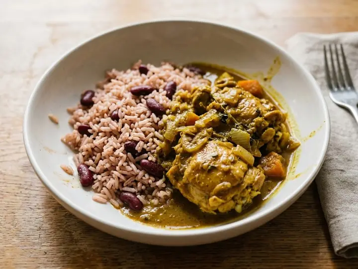

Jamaica · Chicken · No. 081
Jamaican-Style Chicken Curry with Rice and Peas
A single portion of Jamaican cooking, ready in 28 minutes with 8 minutes of prep. Written for one, so there is nothing to halve and nothing to waste. It brings some heat.
Spicy
Method
- 1
Cook the rice with the kidney beans according to the rice packet instructions.
- 2
Fry the onion and garlic in a splash of oil for 3 minutes.
- 3
Stir in the curry powder and fry for 1 minute, then add the chicken and brown for 3–4 minutes.
- 4
Pour in the coconut milk and simmer for 12–15 minutes until the chicken is cooked through and the sauce has thickened.
- 5
Taste and adjust the seasoning.
- 6
Serve with the rice and peas.